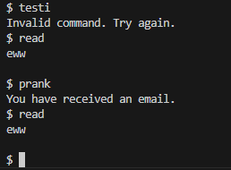

Task 1
In this task, you will make a simple shell. Make a function called "read_file()" that reads the "read.txt" file given on this page into a string and prints its output to the console. Make a function called "prank_user()" where you print "You have received an email". Neither function takes external parameters.
Make a loop in the main function that acts as a shell and takes user input. If the user enters "read", use the read_file function. If the user enters "prank", call the prank_user function. Otherwise, print "Invalid command. Try again."
Example run:

Task 2
Make a program that, based on the given command line parameters, either reads a specific file or writes to a specific file. The parameters should include the name of the file, the operations to be performed (write/read) and possibly another file with the content to be written to the first file. Name the functions write_in_file and read_file. They take 2 and 1 parameters respectively.
Note that the writeln! command creates an extra line in the written file. For example, the write! command allows the user's input to be written to the file as it is.
Note that the program must be run with, for example, the cargo run command instead of the Run button of the rust-analyzer tool, because your program uses command line arguments.
Example run with command line parameters:
cargo run uusi_tiedosto.txt write "testi lisäys"

Example run read:
cargo run uusi_tiedosto.txt read
The contents of the file:
testi lisäys
Example run without commands:
cargo run
No arguments were given.
Task 3
In this task, we make a function that uses threads. After a certain time, the user must press the key f within a short time. If the user presses the correct key while there is still time, they win the duel. Pressing the wrong key results in the user being missed, and the program must wait until the enemy takes their turn. If you don't shoot in time, the opponent will shoot first. The duel starts in 5 seconds. When 3 seconds have passed, the opponent wins the game.
Make a function called start_duel() that starts the battle and the threads and other functions you need to make the program.
Example run, user does nothing:FIRE!!!
Opponent shoots first!
Example run, user inputs the letter f at the right time:
FIRE!!!
f
You fire first!
Task 4
Let's continue with threads. The user has either $100,000 or $1,000,000 worth of money and must stop two thieves from stealing it. The program emphasizes data transfer between threads. It has three threads, two of which represent thieves. The last one is ready to receive input from the user, allowing him to stop criminals before more money is lost. The end result is that the thieves got away with the money they took before you typed "catch" or you lost all your money before you could type "catch".
Make a function called create_threads() that creates a thread per thief, and one thread where the user catches the thieves and loops until the user says "catch" or runs out of money. The function takes a number as a parameter, not a reference.
Thief threads have a sleep time of 5 seconds for a thief who takes $10,000 and 3 seconds for another thief who takes $35,000 from you.
Example run, $1 million:Do you have a million dollars? | y = yes, n = no
y
All right then, millionaire.
ALERT!!! Someone stole $35,000 from you!
Funds left: 965000
ALERT!!! Someone stole $10,000 from you!
Funds left: 955000
catch
The thieves have left.
Example run, no million dollars:
Do you have a million dollars? | y = yes, n = no
n
Let's just assume you have $100,000 then.
ALERT!!! Someone stole $35,000 from you!
Funds left: 65000
ALERT!!! Someone stole $10,000 from you!
Funds left: 55000
ALERT!!! Someone stole $35,000 from you!
Funds left: 20000
catch
The thieves have left.
Task 5
This exercise covers almost all the topics covered in this chapter. The program includes a shell, requires command-line arguments, and contains threads. The arguments define which letter (arg 1) must be printed as many as possible in the given number of seconds (arg 2). One of the threads calculates how time passes. The other receives inputs from the user. The main thread is in a state where it processes the data received from these two threads. Finally, print how many presses the user has made and which key the user selected.
Note that the program must be run with, for example, the cargo run command instead of the Run button of the rust-analyzer tool, because your program uses command line arguments.
Example run:
cargo run f 10
Do you want to start or exit?
$ start
f
Presses: 1
f
Presses: 2
ff
f
Presses: 3
f
Presses: 4
f
Presses: 5
f
Presses: 6
f
Presses: 7
f
Presses: 8
f
Presses: 9
f
Presses: 10
f
Presses: 11
f
Presses: 12
f
Presses: 13
f
Presses: 14
f
Presses: 15
f
Presses: 16
f
Presses: 17
ff
f
ff
ff
f
Presses: 19
f
Presses: 20
f
Presses: 21
f
Presses: 22
f
Presses: 23
f
Presses: 24
f
Presses: 25
f
Presses: 26
f
Presses: 27
f
Presses: 28
f
Presses: 29
f
Presses: 30
f
Presses: 31
f
Presses: 32
f
Presses: 33
f
Presses: 34
fYou have managed to press 'f' 34 times.
Example run 2:
cargo run f 10
Do you want to start or exit?
$ exit